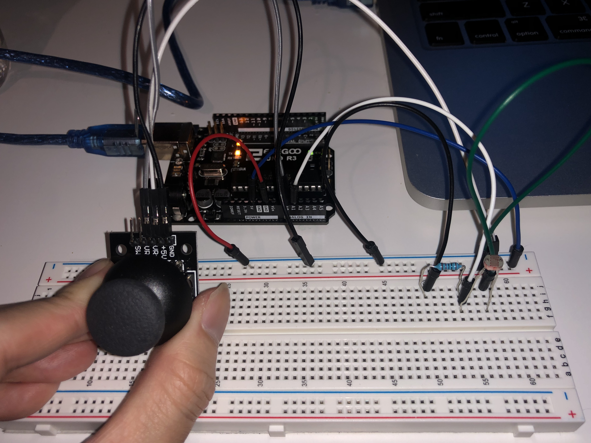
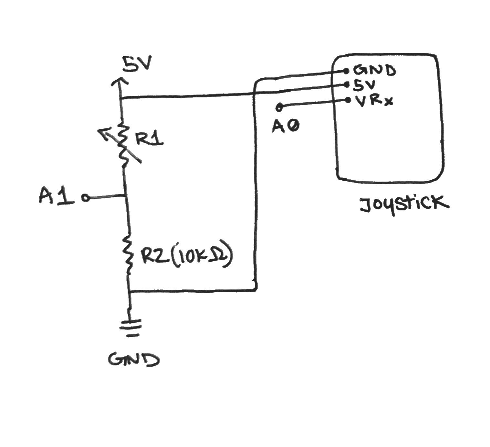
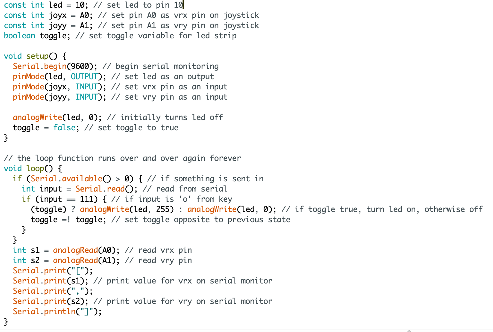
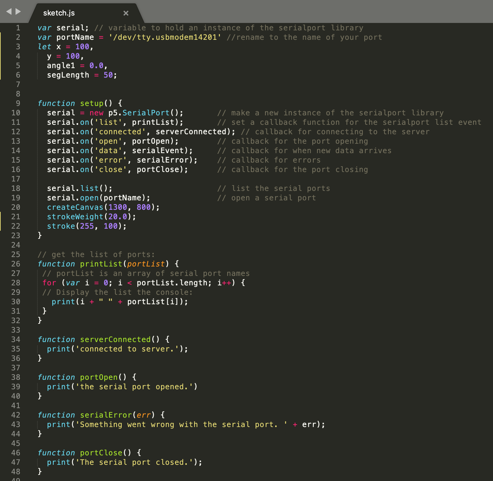

Assignment 5: Talking to the web!
"Create a webpage with p5.js that interacts with data that’s coming from your arduino over serial. You must use at least two sensors, Serial.print, and p5.js."
Talking to the web demo:

This is a gif showing how the circuit works when assembled. There are two sets of circles moving across the plane. The higher set of circles move up/down based on the movement of the joystick and the lower set of circles move up/down based on the brightness of the environment from the photoresistor.
Circuit diagram:

The system has two parts where they both share 5V power and a common ground but A0 connects to the joystick and A1 connects to a photoresistor to interact with data from the arduino over serial and display it on a web browser via p5.js framework.
Schematic and Calculations:

This is a schematic of my circuit. Considering that the range of resistance can vary for the photoresistor, an additional resistor is needed to prevent short circuiting and fully ground the circuit.
V = IR
5V = 200mA (R)
R = 5V/0.2A
R = 25Ω
While the minimimum resistance needed to prevent the board from frying is 25Ω, I used a 10kΩ resistor just to be safe.
In addition, I did map my values from the joystick and photoresistor. I mapped values 0-1023 from the joystick and photoresistor to a range of 0-255 so changes are better translated in the interactive display.
Arduino Code Snippet:

The snippet above is the code that is programmed into the arduino.
Sketch.js Code Snippet:

The snippet above is the code that is programmed into the browser to take serial values from the arduino and display them as a graph.